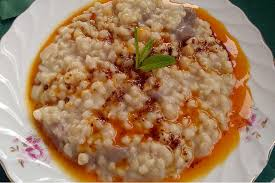

Sinop, zengin mutfağıyla Karadeniz'in lezzetlerini bir araya getirir. Özellikle deniz ürünleri ve hamur işleri öne çıkar. Şehirde öne çıkan bazı yemekler şunlardır:
Nokul
Nokul, mayalı hamurla yapılan bir çeşit poğaça. Türkiye'de lokum, lokul gibi farklı isimlerle adlandırılan hamur işidir. Rulo şeklinde yapılması en ayırt edici özelliğidir. Haşhaşlı, tahinli fındıklı, sakızlı türleri de mevcuttur. Sinop'ta bayram sofralarının vazgeçilmezlerindendir.
Sinop Mantısı
Sinop yemekleri içinde en meşhur lezzet şüphesiz Sinop mantısı. Belki daha önce Sinop’un mantısının meşhur olduğunu duymamış olabilirsiniz. Hatta belki nedir bu Sinop mantısının özelliği diyorsunuzdur. Diğer mantılardan farklı olarak hamurunda yumurta kullanılıyor. Klasik kıymalı iç harç konulduktan sonra muska şeklinde kapatılıyor. Ve en önemli farkı ise üstüne ceviz serpilerek servis edilmesi. Sinop’ta mekanlarda genellikle tabağın yarısı yoğurtlu yarısı cevizli oluyor.
Keşkek
Anadolu'da keşkek daha çok düğün yemeği olarak bilinir. Düğünden bir gün önce ıslatılan buğday, düğün günü sabahtan büyük kazanlar içinde kaynatılmaya başlanır. Kaynatılan buğdaylar ve etler büyük kazanlar içine alınıp tokmaklar yardımıyla kazanın içine vurarak malzemenin iyice erimesi sağlanır.

İçli Tava
Sinop’ta ne meşhur sorusuna verilecek en net cevap şüphesiz balık olur. Balık yemeklerinin de başını içli tava çeker. Karadeniz’in vazgeçilmezi hamsi bu yemeğin ana malzemesi. Hamsili pilava oldukça benzeyen bu lezzetli yemeği mutlaka tatmalısınız.